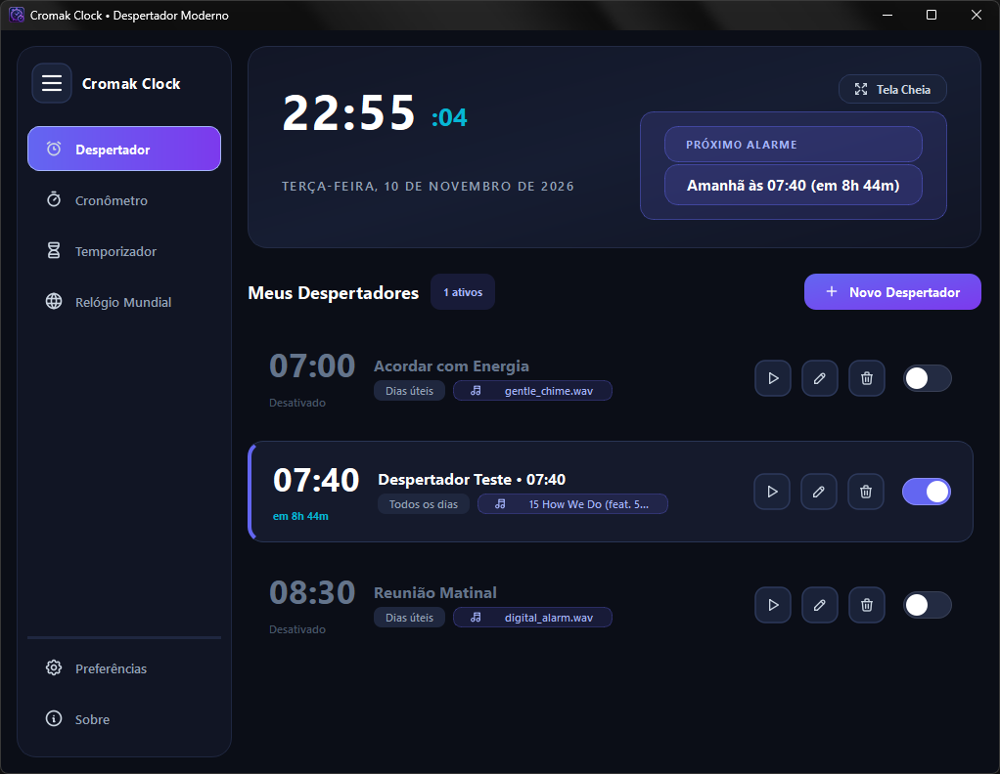
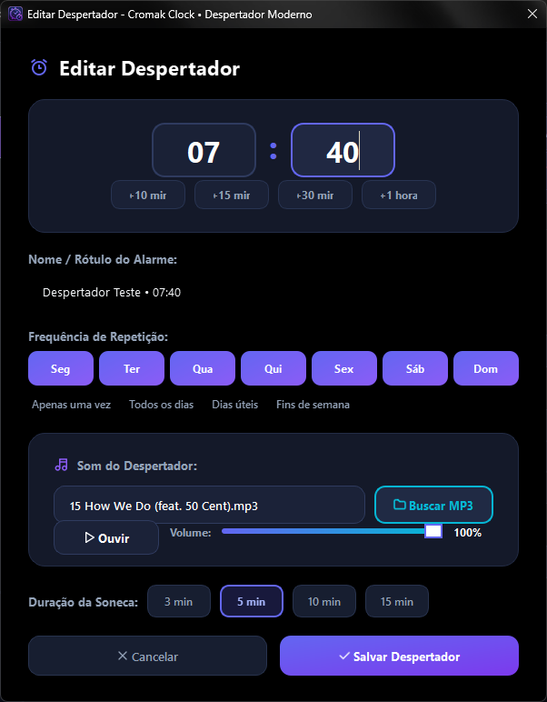
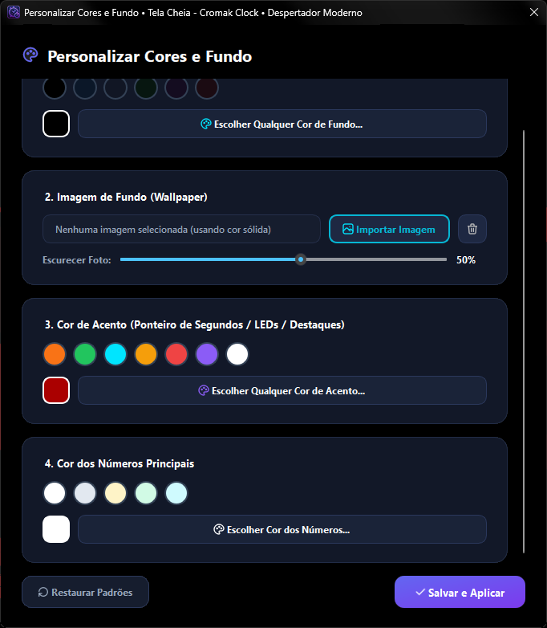
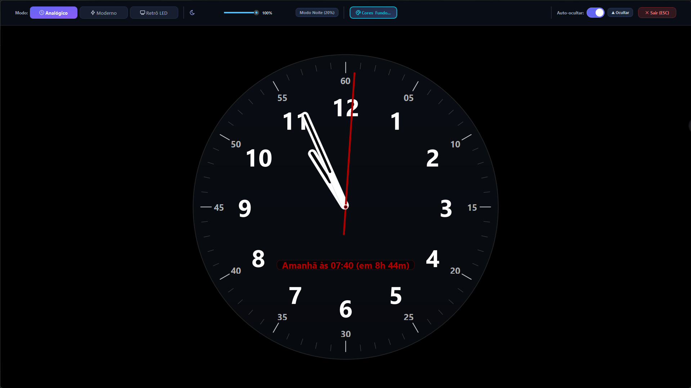
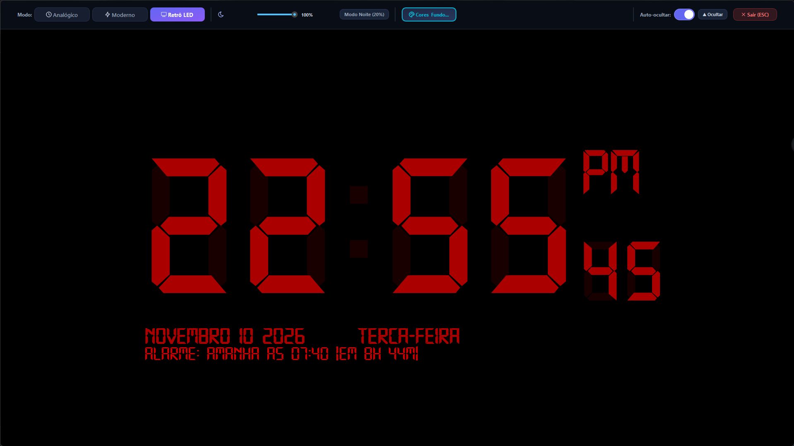
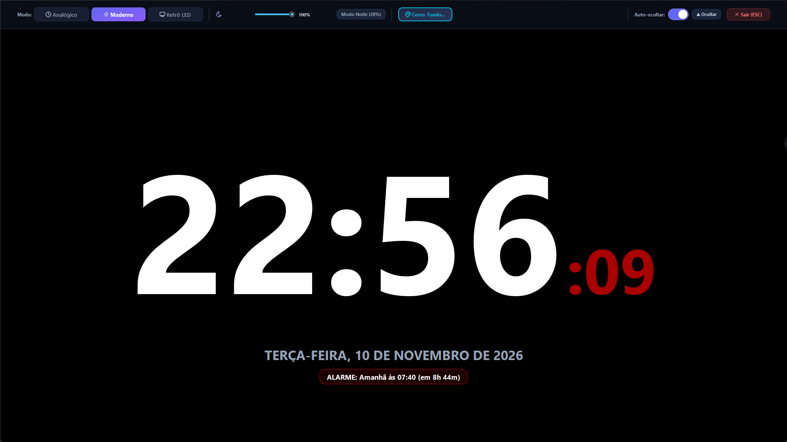

Cromak Clock & Alarm
Modern Alarm Clock, Fullscreen Desk Clock, Stopwatch & Pomodoro Timer.
Version: 1.2.1 (Build 2026.11)
The ultimate clock for your desk and bedtime on Windows. Natively crafted with lightweight architecture for rock-solid punctuality, custom local MP3/WAV playback, smooth anti-glare night dimmer mode, and silent system tray operation.

Absolute punctuality and refined aesthetics for your daily routine.
Standard operating system alarms are often rigid, lack easy local audio file integration, and fail to offer an aesthetic full-screen view when turning your monitor into a handsome bedside or desk clock.
Cromak Clock brings millisecond-accurate scheduling, alarms powered by your choice of local MP3/WAV files, interchangeable faces (Analog, Retro 7-Segment LED, and Modern Digital) with real-time brightness dimming, centisecond stopwatch with lap tracking, and a built-in Pomodoro timer.
The 4 Pillars of Cromak Clock
-
Custom Alarms & MP3 / WAV Audio
Create multiple independent alarms with weekday repetition, adjustable snooze durations, and full support for any local MP3 or WAV audio track on your PC, alongside built-in procedural tones.
-
Fullscreen Desk Mode & Night Dimmer
Turn your monitor into an elegant bedside clock with Analog, Retro LED (7-segment technology font), and Modern Digital styles. Includes a smooth brightness dimmer slider for eye-friendly nighttime viewing.
-
Centisecond Stopwatch & Pomodoro
High-resolution time measurement with lap logging, fast/slow lap markers, and a customizable Pomodoro focus timer to keep your productivity sharp throughout your workday and study sessions.
-
Full Personalization & Silent Tray
Freely customize background, digit, and accent colors. Import custom desktop wallpapers with dimming sliders. Operates quietly in the system tray and starts automatically with Windows.
Explore the Interface
Discover fullscreen desk clock faces, visual customization, and alarm management.

Dashboard & Alarm Center
Overview of configured alarms, real-time live clock, instant activation toggles, and direct control shortcuts.

Alarm Configuration & Editing
Time configuration with quick stepper buttons, repeat day selection, local MP3 audio integration, volume test, and snooze.

Color & Wallpaper Customization
Complete RGB palette selection for background, digits, and accents, with image wallpaper import and darkness slider.

Modern Analog Desk Mode
Clean, minimalist analog dial face with smooth-sweeping hands, clear markers, and date badge for a polished desk setup.

Retro 7-Segment LED Mode
Nostalgic digital clock radio experience with authentic LED segment typography, AM/PM indicators, and on-screen next alarm info.

Modern Digital Desk Mode
Crisp contemporary digital display with hours, minutes, centiseconds, and adjustable ambient night illumination.
Choose the Ideal License for Your Routine
Cromak Clock is 100% free, offline, and ad-free software. You can use it freely or support the project if you wish.
Full Version (Free)
- Unlimited Alarms & Scheduling
- All Clock Themes (Analog, Modern & Retro LED)
- Local MP3 & WAV Audio Track Support
- Centisecond Stopwatch with Laps + Pomodoro
- Night Desk Mode with Dimmer
- 100% Offline & Zero Telemetry
Project Supporter
- The software is 100% identical and complete, but:
- You support future updates and enhancements
- Helps keep the website and servers online
- Supports independent native software development
- Our sincere and eternal gratitude ❤️
🔒 Free, transparent, and secure software proudly distributed by Cromak Technology.
Built-In Native Languages
Cromak Clock includes complete native support for Portuguese and English, enabling instant language switching directly from the application preferences menu without needing a restart.
System Requirements
Operating System
Windows 10 / 11 (x64 Native)
Processor
Dual-Core (1.0 GHz or higher)
RAM Memory
128 MB Free (Ultra-light ~35 MB usage)
Storage
45 MB free disk space
Permissions
Standard User (No administrator rights needed)
Program Languages
Portuguese & English
Instant language toggle in preferencesFrequently Asked Questions
Does Cromak Clock keep running if I close the main window?
Yes! Cromak Clock automatically minimizes to the Windows system tray (near the taskbar clock), maintaining near-zero CPU usage in the background so all your scheduled alarms and timers fire reliably on time.
Can I use any MP3 audio or music track as my alarm sound?
Absolutely. In the alarm creation or edit screen, click "Choose Audio File" to select any local MP3 or WAV song stored on your computer, with independent volume controls and loop playback.
How does the fullscreen desk clock and night dimmer mode work?
Simply click the Fullscreen button or press F11. Cromak Clock displays your selected clock face (Analog, Modern Digital, or Retro LED). Moving your mouse reveals the floating control bar, letting you switch themes and drag the Dimmer slider to reduce brightness for bedside use.
Can the application start automatically with Windows?
Yes. Open the preferences dialog and turn on the "Start with Windows" switch. The app will launch quietly in the system tray every time Windows boots so you never miss an alarm.